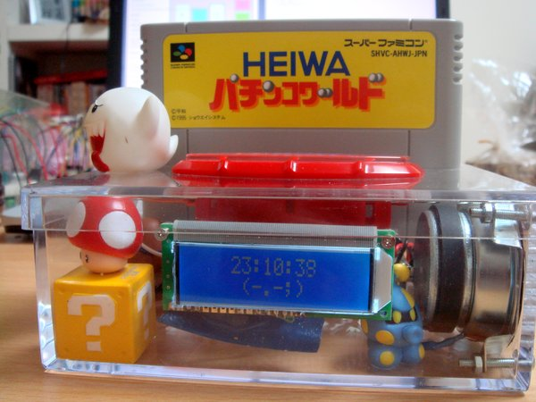

ardReveil vII, its credible life
2010-01-02: case is 30% finished, with holes for button plus card. Card is in fact made in a old Super Famicom cartridge I bought 105 JPY. Big button comes from Akizukideshi (as usual). Transparent box from Tokyu Hands. ... I love Japan. Circuit itself is finished except power part. Code is tested separately, miss assembling only.
2010-01-11: case finished, added 2 extra buttons to the rear (for going to menu mode, setting time etc), plus one led for the funk when alarm is running. However I'm facing few problems:
- 32k (well 30k because of the bootloader) is not enough for having all songs, unless I move to assembler.
- Because memory is filled and I use function pointers, the code goes awry and gets crazy and crash
- Playing music is not made to be "multithreaded" so it can't hook the button press for stop. Hell. And using Timer1 library takes too much memory and eats the PWM used for the LCD backlight. I will need to be inventive.
2010-01-12: no more problems:
- Crashes : I noticed that my function pointer array and the constant that was declaring its size were not coherent ... hehehe my bad. Now works fine.
- Space : changed from "little songs" to jingle, so saves a few kB, enough for adding the missing funcs. Over time maybe better to have many jingles rather than 3 mini-songs is better.
- Music : since music is jingle, I'll set a 5 sec break between each song for user to be able to press the button, with the led blink etc...
2010-01-22: voila, c'est fini. Working, boxed, lots of menu to configure time, alarm, background light, music ... Took me around 2 months of work, but I've learnt a LOT of things.
2010-03-03: it's working ... so-so. When I touch it it crashes, but when my girlfriend does it works ok ... pfff, Life sucks.
FULL SOURCE CODE ARD_Reveil_v2.zip
Circuit
Note1 : power is not presented : it's the classical wallwart %20 PTC 250 mA %20 a 7805 (or alike) for stepdown to 5V. All the components are powered by the Arduino (important I think for the I2C communication with the RTC), only the Arduino gets the power from the 7805.
All buttons are pulled up, like the big pushbutton. Red is used to go in or out of the menu (or means - in some menus), Black is used for changing menu, Big is used for validating or %20.
Notabene: a few modifications on this schema :
- SIPO is moved to pins 2-3, backlight (PWM) of the LCD from pin 3 to pin 10
- Pins 0-1 are left unconnected
- Pins A0 = Big, A1 = Pink led, A2 = Red, A3 = Black
Left-right, top-bottom : YMZ294 chiptune, CD4015 shift register, RTC, 3v coin battery for the RTC to keep time, 4MHz crystal for the Yamaha chip, Arduino Mini Pro 16Mhz/5V
|
|

|
|
|
|
|
|